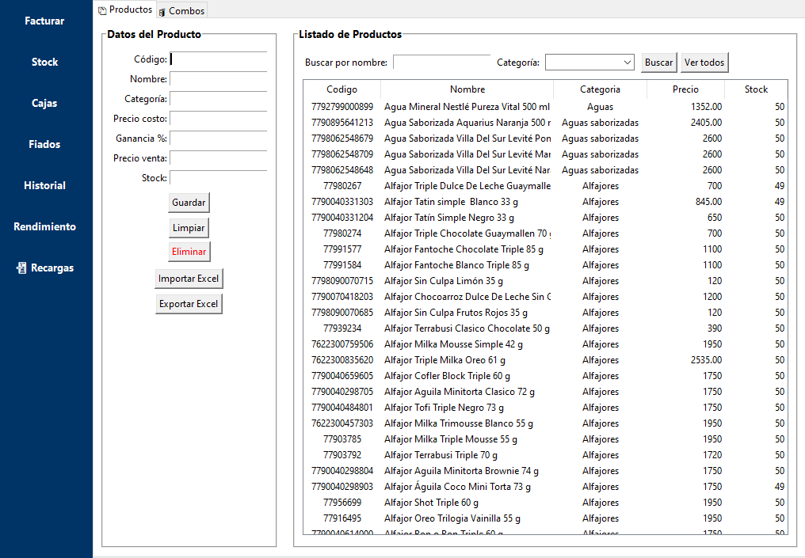
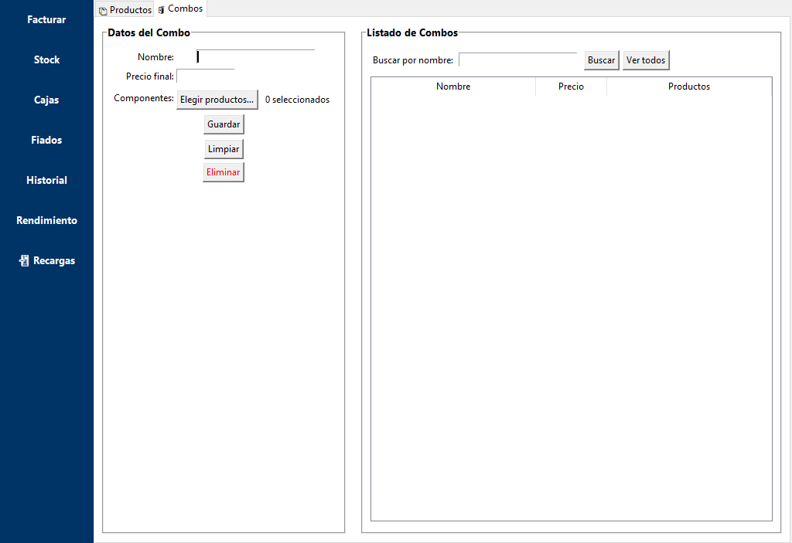
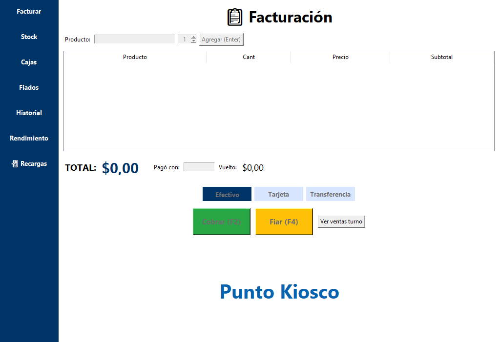
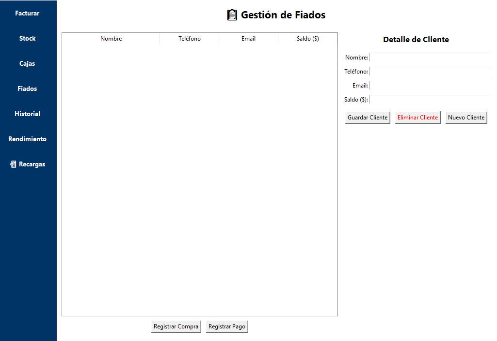

Software de gestión integral para kioscos, almacenes.
Cargá productos con todos sus datos: código, nombre, categoría, precio y stock. Importá y exportá desde Excel para tener siempre tu inventario al día.
Armá combos personalizados usando productos del stock, asignales un precio final y usalos en promociones, desayunos o packs especiales.
Realizá ventas con rapidez, seleccionando productos, método de pago y cálculo automático de vuelto. También podés gestionar fiados o consultar ventas del turno.
Registrá clientes y sus compras fiadas. Llevá un control de saldos, registrá pagos y consultá el historial de cada uno con total claridad.
¿Querés más información o contratar el sistema?
Contactar por WhatsApp Enviar Email